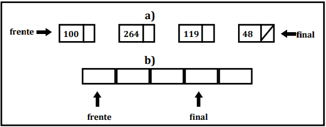
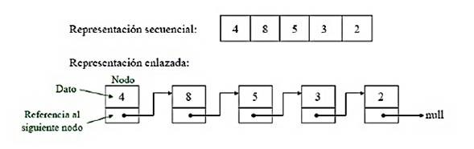

Estructuras de datos lineales
Pilas
una pila es una estructura de datos lineal en la cual se puede agregar o quitar elementos por alguno de los dos extremos de la pila. Por lo que una pila se elimina en el orden inverso al que se insertaron los datos, en pocas palabras el ultimo elemento que se ingreso en la pila es el primero que se saca por lo tanto este tipo de característica se le conoce como de tipo LIFO.
Otra definición de una pila es que son una estructura de datos lineales, como arreglos, ya que los componentes ocupan lugares sucesivos en la estructura cada uno de ellos tiene un único sucesor y predecesor con la excepción de el ultimo y el primero, respectivamente.
Las pilas en este caso no son estructuras de datos fundamentales, esto porque este tipo de estructura no es que este definida en algún lenguaje de programación por lo que para lograr hacerla se necesita de otros algoritmos para poder llegar a el resultado al igual que para representarla se necesita el uso de otras estructuras de datos:
Arreglos y listas.

-
OPERACIONES CON PILAS:
- Push (Insertar): agregar un elemento al final de la pila.
- Pop (Eliminar): Leer y eliminar un elemento final de la pila.
Colas
Una cola se constituye como una estructura de datos lineal en la que los nuevos elementos se introducen por un extremo y los ya existentes se eliminan por el otro, cabe destacar que los componentes de la cola se eliminan en el mismo orden en el cual se insertaron, esto quiere decir que el primer elemento que se introduce será el que se eliminará en primer orden, debido a esto se caracteriza por utilizar el tipo de estructura FIFO.
Las colas se representan por listas enlazadas o por arrays. Para poder crearla se hace uso de dos punteros o variables, que en este caso serian el frente y final, y la lista o array de n elementos.

-
OPERACIONES CON COLAS:
- Agregar: Insertar un elemento al final de la cola.
- Leer: lee y elimina un elemento del principio de la cola.
Listas enlazadas
Esta es una de las estructuras mas simples las listas enlazadas o abiertas. Esta lista forma dos nodos que se organizan de modo que cada uno apunta al siguiente, y el ultimo no apunta a ningún dato, por lo tanto, el ultimo puntero toma el valor de nulo.
En las listas enlazadas existe un nodo especial el cual es el primer nodo y el principal ya que por este nodo es la única forma de acceder a los valores de la lista.

-
OPERACIONES CON LISTAS:
- Agregar o insertar elementos.
- Buscar o localizar elementos.
- Borrar elementos.
- Moverse entre los datos de la lista.
Moquer Company v0.1